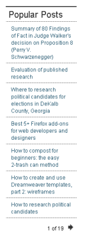
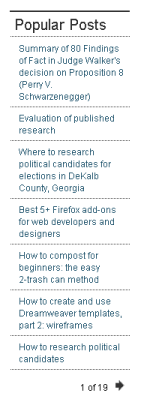

Presenting: the "Adelle" theme for Drupal 6
 When I first started blogging back in 2008, I decided to use drupal as the behind-the-scenes software. I'd been in love with it for years, ever since using version 4 at work. But, my goodness, the trials of getting it to look nice!
When I first started blogging back in 2008, I decided to use drupal as the behind-the-scenes software. I'd been in love with it for years, ever since using version 4 at work. But, my goodness, the trials of getting it to look nice!
Herein you will find my journey through 2 themes to this beautiful design you see in front of you now.
2008: Adopting a Theme
Since I was new to making drupal look prettier (or "theming", as I came to learn it was called), I took the advice of pretty much everyone and started with the Zen theme.
Sadly, I had little time to devote to figuring out drupal theming, and the documentation back then was rather sparse. Conveniently, Zen came with a lovely, minimalist theme called Zen Classic (based on an open source theme called Deliciously Blue).
As you can probably guess, I chose the easy road and installed Zen Classic.
2009: Death & Mourning of a Theme
Imagine my shock when, the VERY next year, Zen Classic was killed off!
And, so, for the next year and a half, every time I logged in to my site, it would give me a lovely warning note that I had modules and themes that were out of date.
Most of the time, this meant the Zen theme, which I dared not update since I didn't have time to troubleshoot any problems changing the theme might entail.
2010: Birth of a New Theme
Then, in the summer of 2010, after finally finishing the degree program that I'd been pursuing while working full-time, I miraculously had free time.
Thus began the accelerated gestation period of a new theme, one that I modestly call:
Pictures of Cute, New Theme by a proud parent
| Header for Site |
Before |
After |
| Popular Posts Block |
Before After
|
 

| Individual Blog Post |
Before
|
After |

| Blog Post Listing by Term |
Before |
After |
Comments
Adelle Frank
Thanks! Next up...recipe site?
I'm thinking of creating a drupal site to track healthy and delicious recipes next...we'll see how this whole free time thing works out. :)
Todd
This is an awesome theme
Well done Adelle - who knew a little free time could result in such a crisp, attractive theme.
Can't wait to see what else you have up your sleeve...